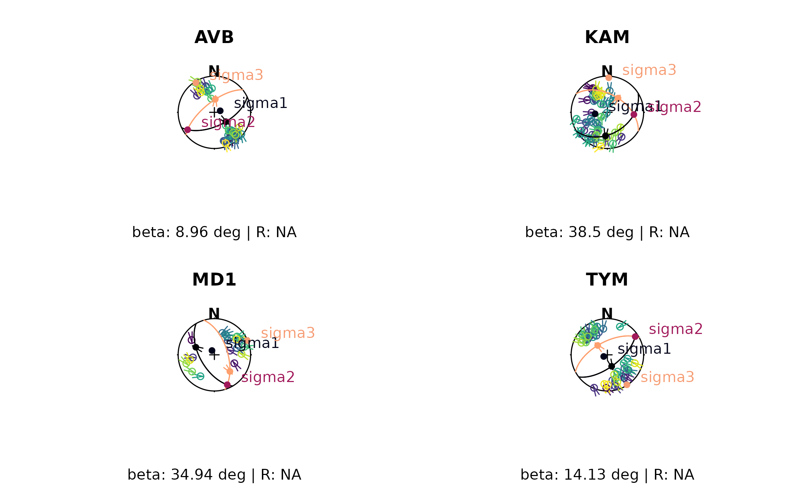
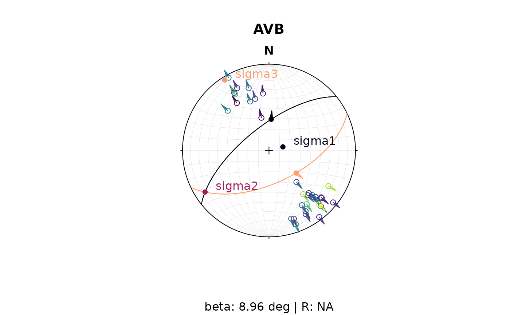

Measurements of fault-slip data are often scattered due to measurement errors and the wavy nature of fault planes and fault striations/slickenlines. The fault scatter is large due to noise, rather than representing the actual geometry of the fault set. The idea of this algorithm is to cluster the fault data set to identify the conjugate set of faults and their the mean orientation Using the Wallace-Bott Hypothesis and Anderson's theory, it then calculates the orientation of the principal stresses, and uses the angles to the fault planes to derive the a best-fit stress shape parameter R.
Usage
slip_inversion_simple(x, cluster_fun = stats::kmeans, n_grid = 1000L)Arguments
- x
object of class
"Fault"- cluster_fun
function for cluster, must have number of desired cluster as second input outputs and vector
cluster. The default isstats::kmeans()- n_grid
integer. Number to optimize grid search for stress shape parameter R
See also
Other stress-inversion:
Fault_PT(),
slip_inversion()
Examples
tym <- slip_inversion_simple(angelier1990$TYM)
stereoplot(title = 'TYM', sub = paste0('beta: ', round(tym$beta, 2), " deg | R: ", round(tym$R, 2)))
hoeppener(angelier1990$TYM, col = assign_col(tym$beta_angles))
angelier(tym$mean_planes, pch = 16, col = viridis::magma(2, end = 0.8), cex = 1)
points(tym$principal_axes, pch = 16, col = viridis::rocket(3, end = 0.8), cex = 1)
text(tym$principal_axes, labels = rownames(tym$principal_axes), col = viridis::rocket(3, end = 0.8), cex = 1, adj = c(-.25, -.25))

# stereo_shmax(SH(tym$principal_axes[1,], tym$principal_axes[2, ], tym$principal_axes[3,], tym$R))
avb <- slip_inversion_simple(angelier1990$AVB)
stereoplot(title = 'AVB', sub = paste0('beta: ', round(avb$beta, 2), " deg | R: ", round(avb$R, 2)))
hoeppener(angelier1990$AVB, col = assign_col(avb$beta_angles))
angelier(avb$mean_planes, pch = 16, col = viridis::magma(2, end = 0.8), cex = 1)
points(avb$principal_axes, pch = 16, col = viridis::rocket(3, end = 0.8), cex = 1)
text(avb$principal_axes, labels = rownames(avb$principal_axes), col = viridis::rocket(3, end = 0.8), cex = 1, adj = c(-.25, -.25))

# stereo_shmax(SH(avb$principal_axes[1,], avb$principal_axes[2, ], avb$principal_axes[3,], avb$R))